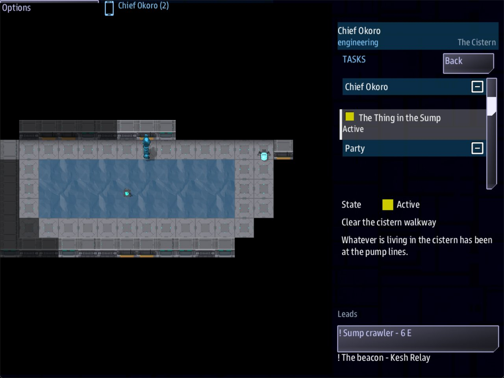

Class 3, Lecture 11 - People and hostiles¶
What you will have at the end¶
Somebody in the gully to talk to, and something in the cistern that fights.
Pim, the caretaker's apprentice, sits with her back to a rock outside the pump house. A click on her opens a scene. Down the stairs, a sump crawler walks the east end of the walkway. It notices a crew member three cells off, chases them and hurts them. Putting it down finishes a side story for the engineer, and it drops something.

Engineering's handheld in the cistern: Chief Okoro on the walkway above the tank, the sump crawler at its east end, and The Thing in the Sump still active on the Tasks app.You add one mark to ground\gully.tiles, and to mission.amd one person, one hostile,
two rooms and one side story.
The video¶
About 6 minutes. Subtitles are available in the player.
Before you start¶
MyAwayas Lecture 10 left it.sbs lint MyAwaysaysclean.- A command prompt open in
C:\Cosmos\data\missions.
Words for this lecture:
| Word | Meaning |
|---|---|
| Person | Somebody on the map who is not one of the crew |
| Calm | A person who never attacks |
| Hostile | A person who attacks any crew member it notices |
| HP | How much hurt somebody can take. Short for hit points |
| Down | At 0 HP. A crew member who is down cannot walk or act |
One kind of record¶
A person and a hostile are the same kind of record. Both stand on a map with Area: and
Mark: or At:, as a prop does. Both have a Sprite: from the fig: list. The game
reads the People section and the Hostiles section in exactly the same way.
One field makes the difference. Calm: yes is a person who never attacks. Without it,
they do.
Step 1 - A mark for a person¶
In the game Pim sits in the scrub on the south side of the gully, and a click on her opens her room on the handheld. She gets a mark, because she belongs to a spot: her camp in the scrub.
In gully.tiles, in the editor: + Entry, Kind scrub, Mark camp, Character a
small m, OK. Paint, and click cell 5, 8.
Or in the text:
Step 2 - A person¶
In mission.amd, find the People section. It has one record, Old Marrow. Under his last
line, leave a blank line and add:
// ---- Lecture 11.
### [Pim](pim)
---
Area: gully
Mark: camp
Sprite: fig:junker_f
Face: female
Calm: yes
Talk scene: pim
Scan: One human, young. Cold, and not hurt.
---
Marrow's apprentice, wrapped in a survey blanket with her back to a rock.
| Field | Means |
|---|---|
Sprite: fig:junker_f |
The figure she is drawn as |
Face: female |
The face shown beside what she says. male, female, or a face written out as in Class 2 |
Calm: yes |
She never attacks |
Talk scene: pim |
The room a click on her opens |
Scan: |
What the Scan app says about her |
A person uses Talk scene:. A prop uses Scene:. They are two fields, and each belongs
to its own kind of record. Lint tells you if you write the wrong one.
A crew member has to be within two cells to talk. A click from further off walks them over first.
Step 3 - What she says¶
Go to the very end of the file and add two rooms:
// ---- Lecture 11: somebody to talk to.
### [Pim](pim)
% "You are from the ship." She does not get up. "I came out here to start the pump, nine days ago. I got as far as the door."
- [Ask what stopped her](pim_why)
- [Leave her be]()
### [What Stopped Her](pim_why)
% "There is something on the walkway down there. It took my tablet out of my hand and I ran. I have been working up to going back for it ever since."
- [Ask her something else](pim)
- [Leave her be]()
Nothing new there. Lecture 12 gives her a great deal more to say.
Step 4 - A hostile¶
Find the Hostiles section. It has one record, the Relay sentry. Under its last line, leave a blank line and add:
// ---- Lecture 11. A hostile is a person without `Calm: yes`.
### [Sump crawler](crawler)
---
Area: cistern
At: 13, 3
Sprite: fig:glassback
HP: 3
Damage: 1
Notice: 3
Stun: 8
Speed: 2
Patrol: 12 1; 13 5; 12 5; 13 1
Drops: tablet
Scan: Silicate shell, about the size of a dog. It has something flat in its jaws.
---
Something low and glassy that has had the walkway to itself for nine days.
| Field | Means | If you leave it out |
|---|---|---|
HP: 3 |
How much hurt it takes before it is down | 2 |
Damage: 1 |
How much it does with each strike | 1 |
Notice: 3 |
How near a crew member must be, in cells, before it notices them | 5 |
Stun: 8 |
How many seconds a stun shot holds it | 8 |
Speed: 2 |
Cells it walks in a second. The crew walks 4 | 2.5 |
Patrol: |
The cells it walks between, as in Lecture 9 | It stands still |
Drops: tablet |
What it leaves where it falls, as a pickup | Nothing |
What a hostile does, read from the library's code and watched in a test run:
- It walks its patrol.
- When a crew member is within its
Notice:and it can see them, it chases them. - When it is in the next cell, it strikes, and again every two seconds.
- When nobody is in sight any more, it goes back to its patrol.
A hostile has to stand, and patrol, where it can walk. The crawler's four cells are all on the walkway at the east end of the tank, away from the stairs. A party that arrives has room to stop and look.
Two things worth knowing about distance. It is counted in steps, across and down, not
as the crow flies. And water does not hide anybody: it is ground with see. The crawler
notices a crew member across the corner of the tank.
Step 5 - A quest it finishes¶
When a hostile is put down for good, the game sends a signal: hostile_down_ and the
record's key. For the crawler that is hostile_down_crawler. A quest can wait for it
like any other signal.
Find the Side Stories section. Under the last line of Clear the Yard, leave a blank line and add:
### [The Thing in the Sump](sump)
---
For: engineering
Starts when: at once
Objective: Clear the cistern walkway
Done when: signal hostile_down_crawler
Leads to: crawler
---
Whatever is living in the cistern has been at the pump lines.
You wrote side stories in Lecture 5. Two things are different on a map.
Done when: signal hostile_down_crawler needs no answer and no card. The game sends
that signal itself.
Leads to: crawler is the key of the thing this story points at. In Lecture 5 the field
had nothing to point at. On a map it has. For the person who holds the story, the
handheld's lists put a ! in front of the crawler, once somebody has seen it.
Lint knows the names of these signals. Misspell the key and it says nothing in the mission sends it.
Save everything and run lint. It should say clean.
Step 6 - A fight¶
Every crew member carries a weapon. It is the Fire app on the handheld.
- Open Fire. Pick one of three settings.
- Press Arm.
- Click the map. That click is a shot, not a walk. One shot, and the weapon is safe again.
A shot reaches six cells, and needs a clear line to what it is aimed at.
Expect to miss. A shot goes to the cell you clicked, and a hostile that is walking may have left it by then. Nothing on the handheld tells you that a shot missed, or that it hit, or that it killed: the Fire app goes back to SAFE either way. Watch the map.
| Setting | On a hostile | On a prop |
|---|---|---|
| STUN | It stands still for its Stun: seconds. It takes no hurt |
Nothing |
| CUT | It loses 1 HP | A door with cut in its Opens with: opens. Anything else is only scorched |
| FULL | It is down at once, whatever its HP | The same as CUT. A shot never takes a prop off the map |
So the crawler, with HP: 3, takes three CUT shots, or one FULL. In the scripted run for
this page: a stun, two cuts and a full, and the calls returned stunned, wounded,
wounded and down. On a real screen none of those words is shown. Played in the game,
the crawler fell to a stun and CUT shots alone, with no FULL, and two of the CUT shots
missed it while it walked.
Lt Reyes fired from cell 9, 1, six cells from the crawler, and it never came for him.
The weapon reaches six cells and this crawler notices at three. That is a kind fight.
Give a hostile Notice: 6 or more and the crew has to take a strike to get a shot.
When it went down three things happened at once. The crawler left the map. A pickup
named tablet appeared on the cell where it fell. And The Thing in the Sump was
complete.
A shot cannot break your mission. Tried for this page, in the yard: every setting at the terminal, and a FULL shot at the beacon. Both were still on the map afterwards, and the terminal still opened its scene.
And nobody calm is harmed. Every setting was fired at Pim, and a FULL shot at Old Marrow. Nothing happened to either of them.
Your own crew is not calm. A shot that lands on a crew member stuns them, wounds them, or with FULL puts them down.
Step 7 - When the crew is hurt¶
Every crew member on the ground has 3 HP. Each strike is told to the one who took it.
From the sentry in the yard: Hit by Relay sentry - 2 of 3 left., and two seconds later
Hit by Relay sentry - 1 of 3 left.
At 0 they are down. A crew member who is down cannot walk and cannot act: a click on the map does nothing. There are two ways back up, and both were played for this page.
A medical kit. Somebody carrying a medkit stands in the next cell and presses Use
medkit in their Pack app. The kit is used up, and the one who was down is on their
feet with 2 HP: Chief Okoro is back on their feet. Used on somebody who is only hurt,
it gives back 2 HP.
Waiting. When everybody on the ground is down, the whole party comes round eight
seconds later, standing at the area's entry: with 1 HP each. In the test, two crew
members went down at the east end of the cistern. Five seconds later they were still
down. Ten seconds later both stood at 3, 1, the foot of the stairs.
So nobody is ever out of the game. But think about what that means for one person alone. One person down is everybody down. They wake at the entry with 1 HP, and the thing that put them down is still there.
A party with one member down and the rest standing is not revived. The others have to help, or go down too.
The starter has one medical kit, the one Old Marrow tells you about. Lecture 12 puts a second in the gully.
Step 8 - Check it¶
Each row was tried on the finished files, one change at a time.
| The mistake | What lint says |
|---|---|
Calm: yse |
unknown-enum-value. In the game she is not calm |
Scene: pim on a person |
unknown-field: Scene is a lifeform field, and this record is being read as a hostile |
The crawler At: a water cell |
tiles-unwalkable: crawler: At: 6, 3 is water, which cannot be walked |
| A patrol cell in the water | tiles-unwalkable |
Done when: signal hostile_down_crawlr |
unfired-signal: nothing in the mission sends it |
Done when: signal crawler_down |
unfired-signal. The name is hostile_down_ and the key, in that order |
For: enginering |
for-nobody, as in Lecture 5 |
| The crawler typed under the Props heading | unknown-field for each of its fields, and unfired-signal for the story |
Pim with no Calm: line |
person-talks-but-attacks: she has a Talk scene: and no Calm: yes. In the game she is a hostile: she walked up to the engineer and took him from 3 HP to 1 in five seconds |
Talk scene: pimm |
dangling-scene. In the game a click on her walks you over, and nothing opens |
HP: three |
not-a-number: Write it in figures. The game reads the default, 2, and says so once in mast.runtime.log |
What lint cannot see¶
All of these lint clean.
| The mistake | What happens |
|---|---|
Calm: yse |
Lint does warn. In the game it reads as no, and she attacks |
Scene: pim on a person |
Lint does warn. In the game nothing opens |
Leads to: crawlr |
The story is handed out and can be finished. It points at nothing |
Face: woman, a word that is no face |
The scene opens. What is drawn beside her words was not seen for this page |
Two that are not mistakes. Drops: tablet, fuse leaves two pickups on the cell. And
Notice: 0 is a hostile that never notices anybody: a crew member stood in the next
cell for five seconds and was not touched.
Step 9 - Play it¶
- All three beam down, and walk to the gully. As Dr Hale, click Pim and talk to her.
- Somebody opens the pump house: pick up the key on the way, or let Chief Okoro try the lock.
- Chief Okoro and Lt Reyes take the stairs. From the foot the crawler is not in sight. Walk east along the walkway, to about 7, 1, until it comes into view. Open Scan: it tells you what is in sight. The crawler's line is there only while it is in view, and it comes and goes as the crawler walks.
- As Lt Reyes, open Fire, choose STUN, Arm, and click the crawler when it is within six cells. Then CUT, until it falls. Shots miss often, and nothing says so.
- As Chief Okoro, open Tasks. The Thing in the Sump is done. Pick up what the crawler dropped.
That fight was played by a script for this page, with stand-in consoles: the settings, the arming and the four shots went through the same calls the Fire app's buttons make. Then it was played in the game itself for the video's pictures.
If something goes wrong¶
| What you see | Why | What to do |
|---|---|---|
| The crawler is not there | Its Area: or At: is wrong, or it is typed under the wrong heading |
Run lint; read mast.runtime.log |
| You click and walk instead of shooting | The weapon was not armed. One shot, then it is safe again | Arm before every shot |
| A shot does nothing | More than six cells away, or something in the line | Get closer; get a clear line |
| A crew member will not move | They are down | Step 7 |
Exercise¶
- Make the crawler tougher:
HP: 5. Then gentler:Damage: 0. Play each. Put it back. - Give the gully a second person: somebody calm, with a room of their own. Use
At:. - Give the sentry in the yard a
Talk scene:. What happens when you click it? What happens while the scene is open? - Break it and read lint:
Calm: maybe; a patrol cell on a wall; the story waiting forcrawler_down.
Then answer on paper:
- The crawler has
Notice: 3. A crew member stands at the foot of the stairs, cell 2, - The crawler is at 12, 1. Is she noticed?
- What three things happen when a hostile with
Drops:goes down? - Why is
For: engineeringon this story a risk, and what would you check?
Checkpoint¶
You are done when all five are true:
sbs lint MyAwaysaysclean.- A click on Pim opens her room.
- The crawler walks its patrol, and comes for a crew member who gets within three cells.
- Putting it down completes The Thing in the Sump and leaves a tablet on the walkway.
- You can say what
Calm:,Talk scene:,Face:,HP:,Damage:,Notice:,Patrol:andDrops:each do.
Next¶
Lecture 12 gives Pim a reason to want that tablet back, and writes the scenes that tie your three areas into one story with two endings.
Further reading¶
Nothing here is needed for Lecture 12.
- "Ground tile maps" in the library documentation: "Placing things on the ground".
- The People and Hostiles sections of Dawnline's
world.amd: ten people, five hostiles, and one who is talked round from one to the other.
Download this lecture's finished files (a zip of its example folder).